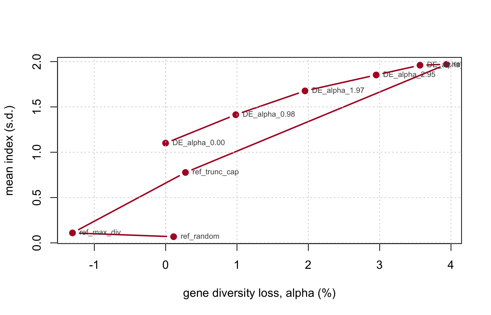

st1 <- stage1_simulate(book_cfg)
c(hybrids = nrow(st1$X), markers = ncol(st1$X),
f_min = min(st1$f), f_max = max(st1$f))
#> hybrids markers f_min f_max
#> 625.00000 2000.00000 0.64475 0.8317518 End to end, and the operational checklist
Everything the book has built, run once, on one dataset, in the order a programme would run it. Then the checklist.
18.1 The whole pipeline in one script
n_sel <- round(0.10 * nrow(st1$X))
res <- suppressWarnings(stage2_select(
X = st1$X, f = st1$f, hybrids = st1$hybrids,
n_sel = n_sel,
alphas = NULL, # NULL = automatic grid, 0 to the attainable ceiling
weights = NULL, # NULL = equal weight across traits
fL = st1$fL, # optional: enables theta_A / theta_B / theta_AB
B_null = 500, B_full = 80, NP = 100, itermax = 200, verbose = FALSE))
NoteThe same pipeline as a script
This chapter runs at the book’s reduced scale so it renders in seconds. The identical pipeline at the production scale of sim_config, writing its tables to report/, is inst/scripts/run_all.R:
Rscript inst/scripts/run_all.R # ~4 min
Rscript inst/scripts/run_benchmark.R # ~6 min; the numbers quoted in README.mdWith real data only the first line changes:
st1 <- stage1_build(X = my_hybrid_matrix, ped = my_pedigree,
traits = my_predicted_traits, fL = my_line_coancestry)18.1.1 The reference values
unlist(res$ref)
#> gd_ref gd_se alpha_max n_sel population_bias
#> 3.259845e-01 3.556567e-05 3.938109e-02 6.200000e+01 6.467346e-03alpha_max is the attainable ceiling from Section 9.9: the loss pure truncation would incur. Any requested budget above it constrains nothing, and stage2_select() says so rather than returning a solution that merely looks constrained.
18.1.2 Metrics per scenario
fmt(res$metrics[, c("scenario", "alpha", "index", "Ns", "Ne_parents",
"Ne_lines_A", "Ne_lines_B", "max_line", "alleles_lost")], 4)| scenario | alpha | index | Ns | Ne_parents | Ne_lines_A | Ne_lines_B | max_line | alleles_lost |
|---|---|---|---|---|---|---|---|---|
| DE_alpha_0.00 | 0.0000 | 1.1004 | 0.7418 | 27.4571 | 12.4805 | 15.2540 | 10 | 63 |
| DE_alpha_0.98 | 0.0098 | 1.4141 | 0.7383 | 22.3488 | 9.1962 | 14.2370 | 14 | 81 |
| DE_alpha_1.97 | 0.0195 | 1.6767 | 0.7349 | 18.0894 | 7.3359 | 11.7914 | 16 | 106 |
| DE_alpha_2.95 | 0.0295 | 1.8523 | 0.7314 | 15.8843 | 5.9505 | 11.9379 | 20 | 116 |
| DE_alpha_3.94 | 0.0357 | 1.9600 | 0.7292 | 14.3701 | 5.2948 | 11.1744 | 21 | 125 |
| ref_truncation | 0.0394 | 1.9701 | 0.7280 | 13.4877 | 4.6878 | 12.0125 | 23 | 124 |
| ref_trunc_cap | 0.0028 | 0.7769 | 0.7408 | 31.6379 | 15.7541 | 15.8843 | 4 | 47 |
| ref_max_div | -0.0131 | 0.1100 | 0.7465 | 36.9615 | 18.6602 | 18.3048 | 5 | 36 |
| ref_random | 0.0011 | 0.0682 | 0.7414 | 37.3204 | 17.9626 | 19.4141 | 6 | 31 |
Read the index column against alpha. That is the price list: what each percentage point of diversity costs in index units, on this dataset, at this selection intensity.
Now read Ne_parents against Ns in the same rows. This is the diagnostic Chapter 7 called for, and the reason Ne_parents is a second constraint rather than a report line:
d <- res$metrics
fmt(data.frame(scenario = d$scenario,
Ns = d$Ns,
Ne_parents = d$Ne_parents,
Ns_relative = d$Ns / max(d$Ns),
Ne_par_relative = d$Ne_parents / max(d$Ne_parents)), 3)| scenario | Ns | Ne_parents | Ns_relative | Ne_par_relative |
|---|---|---|---|---|
| DE_alpha_0.00 | 0.742 | 27.457 | 0.994 | 0.736 |
| DE_alpha_0.98 | 0.738 | 22.349 | 0.989 | 0.599 |
| DE_alpha_1.97 | 0.735 | 18.089 | 0.984 | 0.485 |
| DE_alpha_2.95 | 0.731 | 15.884 | 0.980 | 0.426 |
| DE_alpha_3.94 | 0.729 | 14.370 | 0.977 | 0.385 |
| ref_truncation | 0.728 | 13.488 | 0.975 | 0.361 |
| ref_trunc_cap | 0.741 | 31.638 | 0.992 | 0.848 |
| ref_max_div | 0.747 | 36.962 | 1.000 | 0.990 |
| ref_random | 0.741 | 37.320 | 0.993 | 1.000 |
The status number barely moves across scenarios while the effective number of parents collapses. A programme reporting only \(N_s\) would see a healthy pool and a shrinking parent base it never measured.
18.1.3 Both lenses, and the pool partition
fmt(res$metrics[, c("scenario", "alpha", "F_hom", "F_drift", "cov_diag",
"rare_retained", "GD_WI_hyb", "GD_BS", "F_ST")], 4)| scenario | alpha | F_hom | F_drift | cov_diag | rare_retained | GD_WI_hyb | GD_BS | F_ST |
|---|---|---|---|---|---|---|---|---|
| DE_alpha_0.00 | 0.0000 | 0.0038 | 0.0161 | -0.0123 | 0.8636 | 0.1834 | 0.0393 | 0.1205 |
| DE_alpha_0.98 | 0.0098 | 0.0132 | 0.0248 | -0.0116 | 0.8312 | 0.1829 | 0.0417 | 0.1293 |
| DE_alpha_1.97 | 0.0195 | 0.0224 | 0.0348 | -0.0124 | 0.7727 | 0.1828 | 0.0452 | 0.1414 |
| DE_alpha_2.95 | 0.0295 | 0.0352 | 0.0422 | -0.0069 | 0.7143 | 0.1818 | 0.0471 | 0.1490 |
| DE_alpha_3.94 | 0.0357 | 0.0377 | 0.0490 | -0.0113 | 0.7143 | 0.1821 | 0.0499 | 0.1586 |
| ref_truncation | 0.0394 | 0.0412 | 0.0534 | -0.0121 | 0.7338 | 0.1822 | 0.0514 | 0.1640 |
| ref_trunc_cap | 0.0028 | 0.0154 | 0.0114 | 0.0039 | 0.7273 | 0.1816 | 0.0370 | 0.1138 |
| ref_max_div | -0.0131 | -0.0124 | 0.0063 | -0.0187 | 0.9481 | 0.1853 | 0.0362 | 0.1096 |
| ref_random | 0.0011 | 0.0081 | 0.0066 | 0.0015 | 0.9481 | 0.1805 | 0.0357 | 0.1097 |
alpha constrains the first lens only. F_drift is the unmonitored bill, and cov_diag is exactly the gap between them – verify it:
c(max_deviation_from_Eq3 =
max(abs(d$cov_diag - (d$F_hom - d$F_drift)), na.rm = TRUE))
#> max_deviation_from_Eq3
#> 6.678685e-17GD_BS rising across scenarios is selection concentrating on the most complementary line pairs, which pushes the pools further apart. That is not automatically bad – it is heterosis – but Chapter 11 is the reason to watch it rather than celebrate it.
18.1.4 Distance from the random null
fmt(res$z_scores[, c("scenario", "z_GD", "z_Ne_parents", "z_F_drift",
"z_rare_retained", "z_GD_BS", "z_ANE")], 2)| scenario | z_GD | z_Ne_parents | z_F_drift | z_rare_retained | z_GD_BS | z_ANE |
|---|---|---|---|---|---|---|
| DE_alpha_0.00 | 0.00 | -5.63 | 7.71 | -4.27 | 6.57 | 6.96 |
| DE_alpha_0.98 | -5.20 | -8.56 | 14.78 | -5.69 | 11.05 | 9.97 |
| DE_alpha_1.97 | -10.35 | -11.00 | 22.79 | -8.24 | 17.33 | 19.86 |
| DE_alpha_2.95 | -15.63 | -12.26 | 28.76 | -10.80 | 20.87 | 17.76 |
| DE_alpha_3.94 | -18.88 | -13.13 | 34.27 | -10.80 | 25.81 | 16.12 |
| ref_truncation | -20.85 | -13.64 | 37.81 | -9.94 | 28.51 | 9.80 |
| ref_trunc_cap | -1.47 | -3.23 | 3.95 | -10.23 | 2.44 | 17.27 |
| ref_max_div | 6.91 | -0.18 | -0.16 | -0.57 | 0.96 | 5.91 |
| ref_random | -0.59 | 0.03 | 0.08 | -0.57 | 0.12 | -0.43 |
Every metric in standard deviations from a random selection of the same size. A metric near zero is not distinguishing this plan from chance, and cannot be serving as a constraint.
18.1.5 The selection table
scn <- setdiff(names(res$selection), c(names(st1$hybrids), "n_scenarios"))
head(res$selection[order(-res$selection$n_scenarios),
c("hybrid", "line_A", "line_B", scn, "n_scenarios")], 8)| hybrid | line_A | line_B | DE_alpha_0.00 | DE_alpha_0.98 | DE_alpha_1.97 | DE_alpha_2.95 | DE_alpha_3.94 | ref_truncation | ref_trunc_cap | ref_max_div | ref_random | n_scenarios | |
|---|---|---|---|---|---|---|---|---|---|---|---|---|---|
| 35 | 35 | 10 | 27 | 1 | 1 | 1 | 1 | 1 | 1 | 1 | 1 | 0 | 8 |
| 232 | 232 | 7 | 35 | 1 | 1 | 1 | 1 | 1 | 1 | 1 | 1 | 0 | 8 |
| 606 | 606 | 6 | 50 | 1 | 1 | 1 | 1 | 1 | 1 | 1 | 1 | 0 | 8 |
| 31 | 31 | 6 | 27 | 0 | 1 | 1 | 1 | 1 | 1 | 1 | 1 | 0 | 7 |
| 32 | 32 | 7 | 27 | 1 | 1 | 1 | 1 | 1 | 1 | 1 | 0 | 0 | 7 |
| 57 | 57 | 7 | 28 | 1 | 0 | 1 | 1 | 1 | 1 | 0 | 1 | 1 | 7 |
| 82 | 82 | 7 | 29 | 1 | 1 | 1 | 1 | 1 | 1 | 1 | 0 | 0 | 7 |
| 90 | 90 | 15 | 29 | 0 | 1 | 1 | 1 | 1 | 1 | 1 | 0 | 1 | 7 |
de_cols <- grep("^DE_", scn, value = TRUE)
c(scenarios = length(scn),
chosen_in_all_DE = sum(rowSums(res$selection[, de_cols, drop = FALSE]) ==
length(de_cols)),
never_chosen = sum(res$selection$n_scenarios == 0),
total_candidates = nrow(res$selection))
#> scenarios chosen_in_all_DE never_chosen total_candidates
#> 9 18 386 625n_scenarios is the most directly useful column in the whole output. Hybrids chosen under every diversity budget are robust to the choice of \(\alpha\) – they are the plan’s backbone, and the argument for them does not depend on a policy number nobody wants to defend. Hybrids that appear only at the loosest budget are the ones being bought with diversity.
18.2 Reading the frontier
plot(d$alpha * 100, d$index, type = "b", pch = 19, col = "#b2182b", lwd = 2,
xlab = "gene diversity loss, alpha (%)", ylab = "mean index (s.d.)")
text(d$alpha * 100, d$index, d$scenario, pos = 4, cex = 0.65, col = "grey30")
abline(v = 0, lty = 3)
grid()
Choose the knee, not the endpoint. Past the knee, each additional unit of index costs disproportionately more diversity, and the diversity is not recoverable next cycle while the index gain is realised once.
18.3 What this simulation cannot tell you
Stated plainly, because the numbers above are precise and precision invites more confidence than the model supports.
The GEBVs carry no prediction error. The traits are built from known marker effects (Chapter 3). Chapter 10 Finding 5 measures what happens when they do not: the reported index is biased upward, and error correlated with relatedness costs several times the diversity that independent error of the same size does. The plans below should be read as an optimistic ceiling.
The model is additive. An additive \(\mathbf{G}\) misses heterosis and specific combining ability, which is precisely what a hybrid programme sells. The diversity constraint does not need a dominance model; the mean-performance ranking does (Chapter 8). Do not conflate them, and do not use these index values as performance predictions.
The pools are symmetric by construction. Both are simulated from the same ancestral frequencies at the same \(F_{ST}\). Real heterotic pools differ in size, history and internal structure, and a real programme will find one pool eroding faster than the other – which is why ne_lines_pool() is reported per pool.
\(N_s\) is not a drift projection. It is a static descriptor (Section 9.3). Do not extrapolate it forward.
One cycle, not a trajectory. Every result here is a single round of hybrid selection. Chapter 11 showed that a constraint applied at one stage buys stage-level diversity, not end-of-pipeline richness – and the same logic applies across cycles. A one-cycle constraint is not a multi-cycle policy: Chapter 17 runs fifteen of them and finds the unconstrained programme ahead for eight cycles and behind for the rest.
\(p_0\) must be frozen. In this book it is set once in build_ctx(). In a real multi-cycle programme it must be the founder cycle’s frequencies, propagated forward – the single most common error in applying F_hom and F_drift (Chapter 7). Chapter 17 shows the failure directly: re-anchored, five generations of real drift are reported as exactly none.
18.4 The operational checklist
18.4.1 Setting up
- The base \(p_0\) is frozen at the founding cycle and documented.
- Diversity is computed on molecular coancestry
f, never on a centeredG. Checksum(G) == 0once, to see why. - The marker panel’s MAF spectrum is known – it decides how severely the two lenses diverge.
- Heterotic-group assignment is recorded, with the method that produced it, and treated as uncertain.
18.4.2 Choosing the budget
- The attainable \(\alpha\) ceiling is computed before choosing \(\alpha_{\max}\). A budget above the ceiling constrains nothing.
- Loss is measured against a same-size resampling baseline, never against the full pool.
- The constraint is applied at the target set size, not incrementally.
- The frontier is traced and the knee chosen, rather than a round number.
18.4.3 Running the optimiser
- The search is encoded on line weights, not hybrid keys.
- The differential evolution is warm-started from greedy solutions.
- \(N_{e,\text{par}}\) is a second constraint, not a report line.
- The per-line usage cap is enforced in the decoder, not by penalty.
- The result is checked against the continuous relaxation. A large gap means the optimiser has not converged; a slack constraint means the search never reached the boundary.
18.4.4 Validating the plan
F_homandF_driftare computed separately and reported together, withcov_diagas the diagnostic.- Allelic richness is computed on the returned plan – it is the one metric carrying information \(\theta\) does not.
- The within/between pool decomposition confirms diversity was not preserved by degrading pool separation.
- The number of selected parent lines is biologically plausible.
- \(N_s\) is reported; a rate-based \(N_e\) is not, under active management.
- Every metric is reported against the random null, in standard deviations.
18.4.5 Across cycles
- The per-stage loss ledger is kept. DH induction, not hybrid mining, is usually where the diversity goes.
- The regression of \(\log(1 - F)\) on cycle is checked for linearity. Curvature means a non-constant rate.
- Periodic germplasm injection is planned. A closed elite pool depletes however well the constraint is managed.
- The diversity cost per cycle is reported when cycle time is shortened.
18.5 Where to go next
Three extensions the material here supports but does not cover, each needing new work rather than new derivation:
Real data ingestion. load_data() is the single swap point and is currently a stub. A worked path from a VCF to the X/f/hybrids contract is what most readers will need first, and it is the one extension here that is pure engineering rather than new derivation.
Estimating the dominance deviations. Chapter 8 shows that expected heterosis depends on the alignment between divergence and \(d\), and that no frequency-based statistic can see \(d\). Everything downstream of that – ranking crosses on more than the mean, putting a number on the \(\lambda\) of Chapter 9 – waits on an estimate of \(d\) the book does not attempt.
Prediction error compounded across cycles. Chapter 10 Finding 5 measures it within one cycle and Chapter 17 assumes it away (C7). The two have not been run together, and the interaction is not obviously benign: correlated error concentrates the selection, and Chapter 17 shows concentration is what erodes the programme’s future.